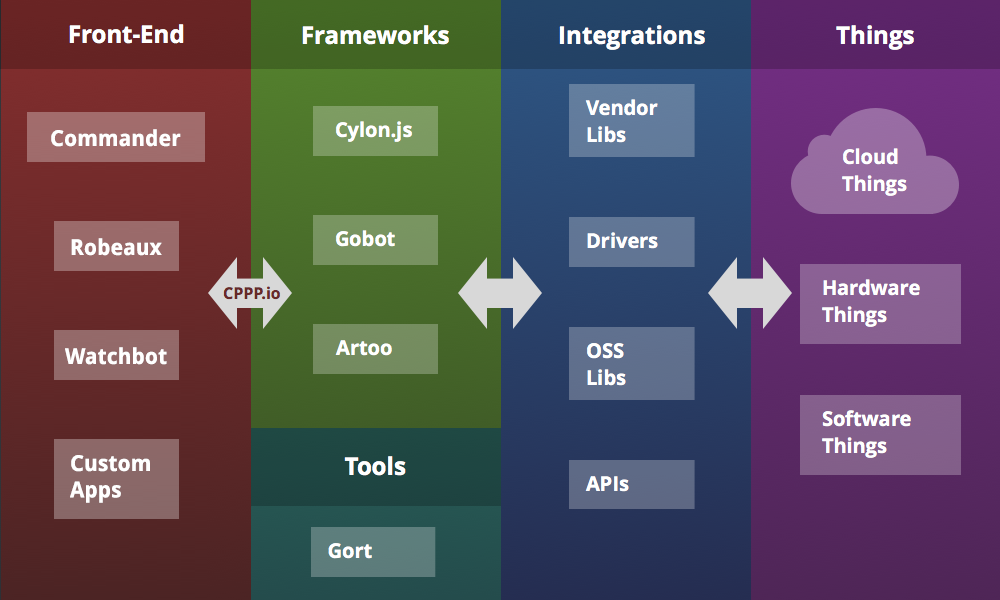

Poner el Internet de las Cosas a trabajar
@deadprogram
Buenas tardes
Estamos en la oficina de Endesa
Yo soy Ron Evans (@deadprogram)
El "Ringleader"
@hybrid_group
hybridgroup.com
Poner el Internet de las Cosas a trabajar
Que es el Internet de las Cosas?
Aplicaciones
Cortes o fallas
Eficiencia energética
Eficiencia operativa
Estrategias de mantenimiento
Experiencia del usuario
Una breve historia de comunicacion Mecanismo a Mecanismo (M2M)
Estrategias
Busca donde la empresa está en contacto con el mundo real
Utiliza plataformas de hardware libre y código libre
Constituir asociaciones
Empezar aceleradoras y incubadoras
Hacer inversiones
Tacticas
Prototipo en miniatura
"Producto Mínimo Viable"
Construir - Medir - Aprender
Patrocinar "hackathons"
Seguridad
Fisica
Firmware
Aplicacion
Red
Servidor
La arquitectura de soluciones de "IoT"

Demostración
Protagonizada
"Hola, mundo" de cosas
Arduino 101
var Cylon = require("cylon");
Cylon.robot({
connections: {
arduino: { adaptor: "firmata", port: "/dev/ttyACM0" }
},
devices: {
led: { driver: "led", pin: 13 }
},
work: function(my) {
every((1).second(), my.led.toggle);
}
}).start();
"Hola, mundo" de cosas
Arduino 101
var Cylon = require("cylon");
Cylon.robot({
connections: {
arduino: { adaptor: "firmata", port: "/dev/ttyACM0" }
},
devices: {
led: { driver: "led", pin: 13 }
},
work: function(my) {
every((1).second(), my.led.toggle);
}
}).start();
"Hola, mundo" de cosas, parte 2
Intel Edison
var Cylon = require("cylon");
Cylon.robot({
connections: {
arduino: { adaptor: "edison" }
},
devices: {
led: { driver: "led", pin: 13 }
},
work: function(my) {
every((1).second(), my.led.toggle);
}
}).start();
Aplicación "benelit"
Estación de sensores
Estación base
Sistema de reparación
Estación de sensores
Arduino 101 + Sensores + MQTT
// code here...
Estación base
Intel Edison + LEDs + MQTT
// code here...
Sistema de reparación
Parrot Minidrone + DS3 + MQTT
// code here...